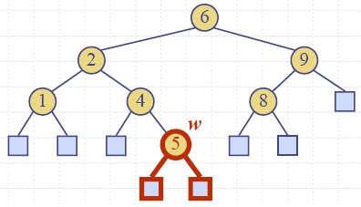
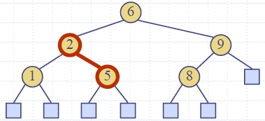
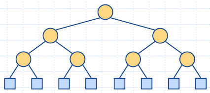
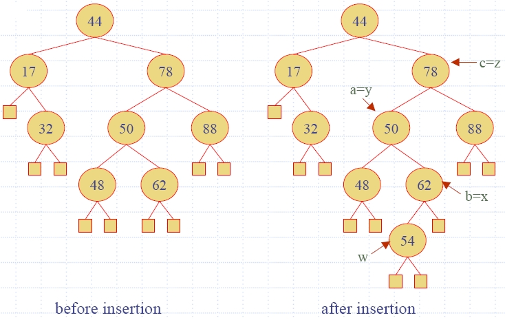
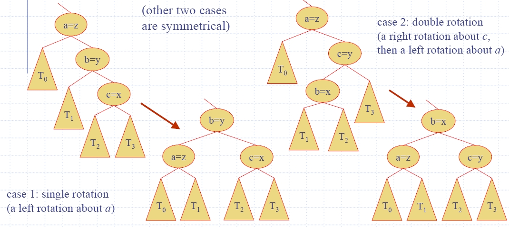
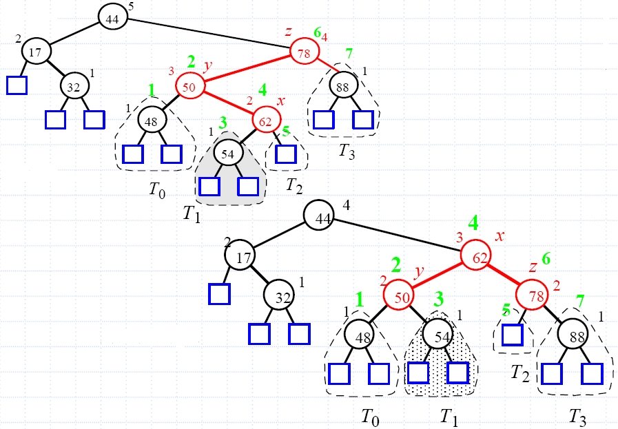
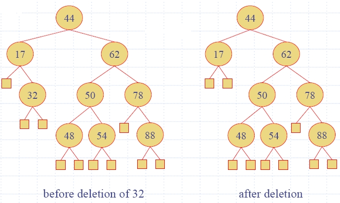

13. Търсещи дървата - първа част
Речник АТД
Двоични дървета за търсене
- Търсене
- Операции за обновяване - вмъкване и изтриване
- Най-добър и най-лош случай
- C++ реализация
AVL дървета
- Вмъкване в AVL дърво
- Премахване на възел от AVL дърво
- Времена за изпълнение на операциите на речник АТД с реализация
като AVL дърво
- C++ реализация
Речник АТД
(10. Речници - първа част)
Ще бъдат изучени няколко структури от данни, базирани на дървета
за реализиране наредени речници.
Основните операции нареден речник
АТД са:
- find(k) - Връща
позицията на елемент с ключ k
или nullposition, ако няма такъв ключ.
- findAll(k) - Връща
позиционен итератор за всички обекти с ключ k.
- insertItem(k,e) - Вмъква
обект (двойка) с елемент e и ключ k.
- removeElement(k) - Изтрива
обект с ключ k. Възниква грешка, ако няма такъв елемент.
- removeAllElements(k) - Изтрива
всички обекти, чийто ключ е равен на k.
- closestBefore(k)-
Връща позиция на обект с най-голям ключ, по-малък или равен на
k.
- closestAfter(k)
- Връща позиция на обект с най-малък ключ, по-голям или равен
на k.
Двоични дървета за търсене
(7. Дървета - втора част)
- Двоично дърво за търсене е двоично дърво за съхранение на
ключове (или двойки ключ-елемент) в своите вътрешни възли,
които имат следното свойства:
- Нека u, v и w са върхове на дървото
такива, че u
е в лявото поддърво на v
и w е в дясното
поддърво на v.
Тогава key(u) ≤ key(v) ≤ key(w);
- Външните възли не съхраняват ключове.
- Inorder обхождане (ляво-корен-дясно) посещава ключовете
на речника в ненамаляващ ред.
 |
6(2(1, 4), 9(8, -))
Ключовете на речника в ненамаляващ ред:
1 2 4 6 8 9
|
Търсене
- За търсене на ключ k,
се върви по път надолу, тръгвайки от корена.
- Следващ възел за посещение (ляво или дясно дете) зависи
от резултата от сравнението на k с ключа в текущия възел.
- Ако се достигне листо, ключът не е намерен и се връща
nullposition.
Algorithm find (k, v)
if T.isExternal (v)
return Position(null)
if k < key(v)
return find(k,
T.leftChild(v))
else if k = key(v)
return Position(v)
else {
k > key(v) }
return find(k, T.rightChild(v))
|
- Примери: find(4),
find(7)
 |
Търсим 4:
4 < 6 - ляво
4 > 2 - дясно
4 = 4 - намерено!
Търсим 7:
7 > 6 - дясно
7 < 9 - ляво
7 < 8 - ляво
листо - няма!
|
- Функцията find(k)
на речника D се
изпълнява за време O(h), където h е височината на
двоичното търсещо дърво T,
използвано за реализацията на D.
Операции за обновяване (актуализиране)
Вмъкване
- За да се изпълни операция insertItem(k, e),
се търси с ключ k.
- Нека k не е в
дървото и нека w е
листото, достигнато при търсенето.
- k
се поставя във възел w
и w се разширява до
вътрешен възел (операция expandExternal(w) на двоично
дърво АТД).
Пример: insert 5

|

|
Изтриване
- За да се изпълни операция removeElement(k), се търси с ключ k.
- Нека ключ k е в
дървото и нека v е
възелът, съхраняващ k.
- Ако възел v има
дете листо w,
изтриват се v и w от дървото
(операция removeAboveExternal(w) на двоично дърво АТД).
Пример: remove 4

|

|
Нека ключът k за
изтриване се съхранява във възел v, чийто деца са вътрешни възли.
- Намира се вътрешен възел w, който следва v в inorder обхождане на дървото.
- Копира се key(w) във възела v.
- Изтрива се възел w
и неговото ляво дете z
(което е листо) с операция removeAboveExternal(z).
Пример: remove 3
Най-добър и най-лош случай
- Даден е речник с n
членове, реализиран като двоично търсещо дърво с височина h.
- Използваната памет е O(n).
- Методите findElement(),
insertItem() и
removeElement()
отнемат време O(h).
- Височината на дървото е O(n)
в най-лошия случай и O(log
n) в най-добрия
случай.

|

|
Binary
Search Tree - визуализация
Binary Search
Tree - лекция на "разбираем" английски
Binary
Search Trees, BST Sort - лекция в MIT
C++ реализация
A Binary Search Tree in C++
html-9.2
(Position)
html-9.3 (BST1)
html-9.4 (BST2)
html-9.5 (BST3)
html-9.6 (BST4)
except.h - LBTree.h - BSTree.cpp
AVL дървета
- Свойство височинен
баланс (Height-Balance Property): За всеки вътрешен
възел v от T разликата
във височините на децата му може да бъде най-много 1.
- AVL дърво е двоично търсещо дърво със свойството
височинен баланс.
- Adel'son-Vel'skii and Landis (Адельсон-Вельский, Ландис -
1968).
- Един възел в балансиран, ако разликата във
височините на децата му е най-много 1.
- Твърдение:
Височината на AVL дърво, съхраняващо n ключове е O(log n).
Пример: AVL дърво - 44(17(-,32),78(50(48,62),88))
Вмъкване
в AVL дърво
- Изпълнява се insertItem(k,e) - метод от
базовия клас BST, вика се expandExternal(w) от двоично дърво АТД.
- Височината на дървото може да се увеличи и да се наруши
свойството "височинен баланс".
- Ако има небалансиран възел:
- Нека z е
първият небалансиран възел, който срещаме по пътя от w към корена на T.
- Нека y
означава детето на z
с по-голяма височина.
- Нека x е
детето на y с
по-голяма височина.
Тривъзелно преструктуриране
(след вмъкване)
- restructure(x)
- Нека a, b, c са
x, y, z в редицата
при inorder обхождане.
- Извършваме ротация на трите възела така, че b да е най-горе в
дървото, т.е. b(a, c).
- Пример: insertItem(54, e)

- Има 4 възможни начина за изобразяване на (x, y, z)
в (a, b, c).

- Пример: insertItem(54, e)

- Тъй като това преструктуриране може да нарушава баланса
на друг възел по-високо в дървото, трябва да продължим
проверката за баланс до достигане на корена на T.
Премахване
на възел от AVL дърво
- Изпълнява се removeElement(k) - метод от базовия клас BST, вика се removeAboveExternal(w) от двоично дърво АТД.
- Премахването в двоичното търсещо дърво
означава, че премахнатият възел става (празен) външен възел.
- Неговият родител w може да стане небалансиран възел.
- Пример: removeElement(32)

Ребалансиране след премахване
- restructure(x),
както при вмъкване
- Нека z е
първият небалансиран възел w по пътя от w
към корена на дървото.
- Нека y е
детето на z с
по-голяма височина.
- Нека x е
детето на y с
по-голяма височина.
- Изпълняваме операция restructure(x) за да възстановим баланса на z.
- Тъй като това преструктуриране може да нарушава баланса
на друг възел по-високо в дървото, трябва да продължим
проверката за баланс до достигане на корена на T.
Времена
за изпълнение на операциите на речник АТД с реализация като AVL
дърво
- Една реконструкция отнема време O(1)
- като използваме реализация на двоично дърво със
свързана структура
- find е O(log n)
- височината на дървото е O(log n),
няма реконструкции
- insert е O(log
n)
- началното търсене е O(log
n)
- преструктуриране нагоре по дървото - не повече от O(log n)
- remove е O(log
n)
- началното търсене е O(log
n)
- преструктуриране нагоре по дървото - не повече от O(log n)
AVL
tree - визуализация
AVL Trees,
AVL Sort - лекция в MIT
C++ реализация
html-9.8 (AVL Item)
html-9.9 (AVL Tree 2)
html-9.10 (AVL Tree 1)